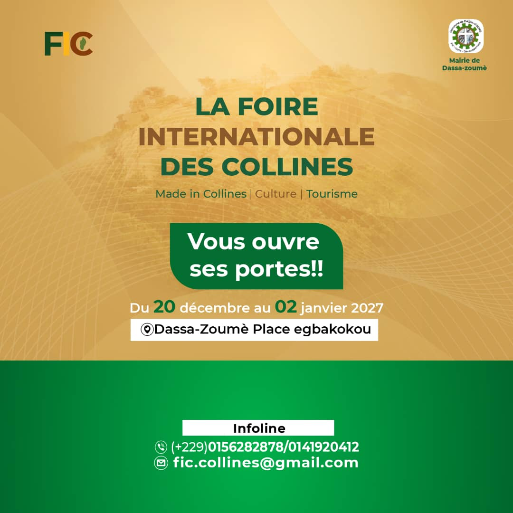
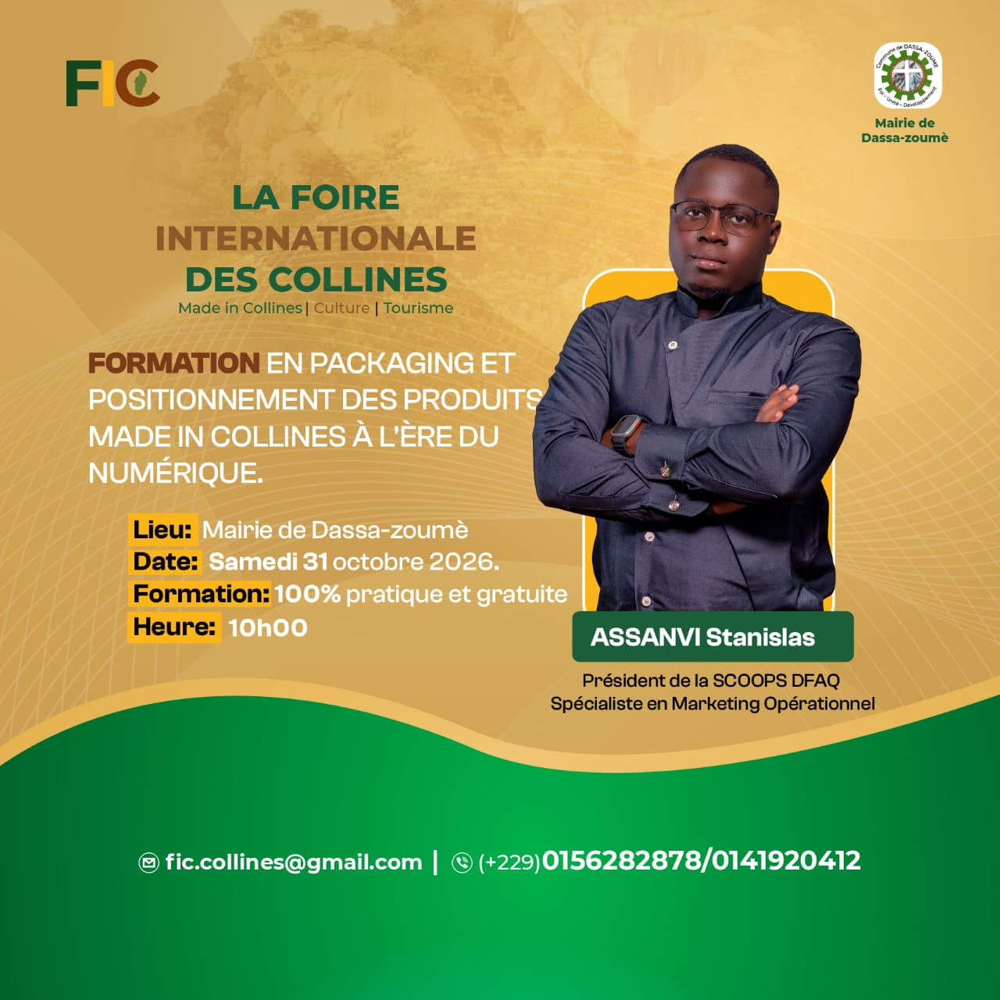
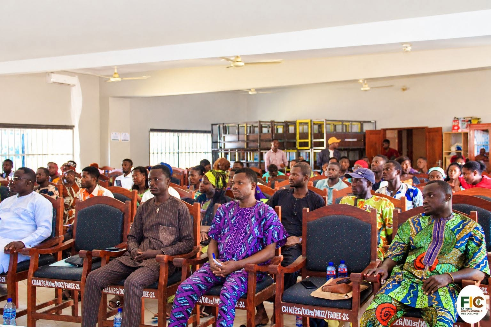
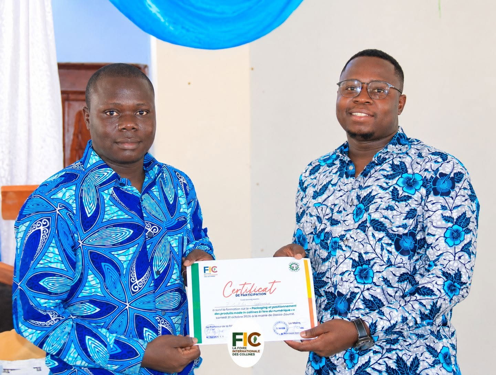

Les produits Made in Collines au cœur du numérique
Dans le cadre de ses initiatives, la FIC a organisé une formation consacrée au packaging...
La FIC est un espace de valorisation, de connexion et de projection pour le département des Collines. Exposer, découvrir, échanger et entreprendre.
Découvrez l'ambition de la première édition de la Foire Internationale des Collines à travers cette vidéo.

La Foire Internationale des Collines (FIC) annonce sa première édition, qui se tiendra du 20 décembre 2026 au 2 janvier 2027 à la Place Egbakokou, Dassa-Zoumè.
Pendant 14 jours, la FIC réunira entrepreneurs, artisans, producteurs, acteurs culturels, exposants, touristes et visiteurs autour du Made in Collines, de la culture, du tourisme et des initiatives locales.
Cette première édition sera un espace de rencontres, de découvertes, d’échanges et d’opportunités, mettant en valeur les savoir-faire et les talents des Collines et contribuant au rayonnement économique, culturel et touristique du territoire.
Rendez-vous à Dassa-Zoumè pour vivre la première édition de la FIC !
Un espace de valorisation, de connexion et de projection pour le département des Collines. Découvrez notre mission et nos objectifs.
Offrir une vitrine aux produits, savoir-faire et entreprises du territoire.
Faire connaître la richesse culturelle, artisanale et touristique des Collines.
Créer des espaces de dialogue entre producteurs, investisseurs et institutions.
Suivez les préparatifs et les temps forts de la première édition.
Dans le cadre de ses initiatives, la FIC a organisé une formation consacrée au packaging...

Découvrez en images les coulisses de la préparation de la première édition de la FIC...
La Foire Internationale des Collines est fière de s'entourer d'acteurs engagés pour valoriser le territoire.

Samedi 31 octobre 2026 — Dassa-Zoumè
En prélude à sa première édition prévue du 20 décembre 2026 au 2 janvier 2027, la FIC organise une formation pratique destinée aux entrepreneurs, artisans et porteurs de projets sur l'emballage et le positionnement numérique des produits locaux.
La promotion du « Made in Collines » se prépare activement à Dassa-Zoumè. Initiée par le comité d'organisation de la FIC, cette session vise à renforcer les capacités des entrepreneurs, artisans et porteurs de projets afin de mieux valoriser leurs productions et d'élargir leurs débouchés commerciaux. Selon Adébayo Parfait ALLALÈ, représentant du comité d'organisation, cette initiative constitue un premier rendez-vous avec les acteurs économiques locaux avant le lancement de la foire, dont le caractère itinérant permettra de parcourir les six communes du département des Collines.
Au cœur de cette formation, les participants ont été outillés sur les techniques d'emballage, la présentation des produits et les stratégies de communication numérique. Sous la conduite de Stanislas ASSANVI, spécialiste en marketing opérationnel, ils ont notamment identifié différentes productions issues des matières premières locales et recherché les emballages adaptés à leur commercialisation.
Présent à la cérémonie d'ouverture au nom du maire de Dassa-Zoumè, le chef d'arrondissement de Dassa 1, Comlan Lié HOUÉHA, a salué une initiative en phase avec les enjeux de développement économique local. Avec cette formation pratique, sanctionnée par une attestation de participation, les organisateurs entendent préparer les acteurs locaux à tirer pleinement profit de ce rendez-vous économique, culturel et touristique.



La première édition de la FIC se tiendra à Dassa-Zoumè, au cœur du département des Collines.
Ensemble, faisons de cette première édition un succès pour tout le territoire.